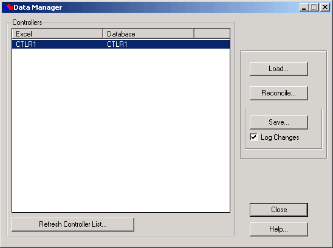
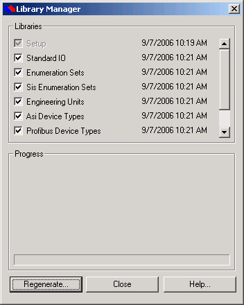
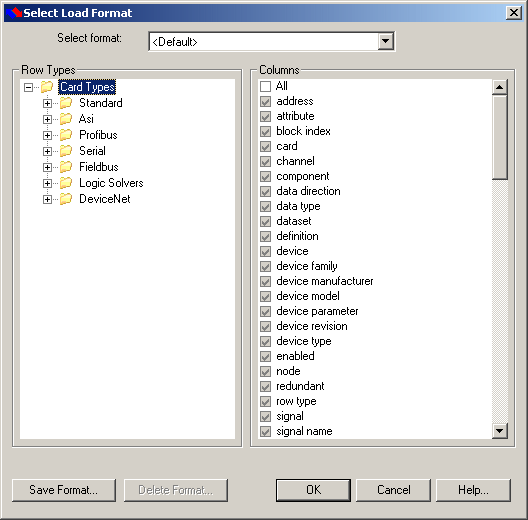

Using the SmartPlant I/O Support Add-in
There are a few points to note:
Do not use the Excel delete row function. Always use the DeltaV Add-in context menu options to delete cards, devices, datasets, IO module slots, and signals.
Always use the DeltaV Add-in context menu options to restore objects.
Regenerate the library after library objects change in the DeltaV database.
The keyboard shortcut for paste (CTRL+V) does not work when the add-in is loaded. Paste using the clipboard.
You must have a workbook open before you can use the add-in.
DeltaV add-ins do not work if the workbook is hidden (if you selected ).
Data Manager
The Data Manager dialog looks like:

The Data Manager dialog contains the following controls:
Load – The add-in populates the Excel workbook with I/O configuration information from the Database Snapshot for the controllers selected in the Data Manager dialog.
Note:If you load a controller that already exists in the workbook, the workbook version is overwritten with the version in the Database Snapshot.
Reconcile – Use Reconcile to compare the configuration information in the Database Snapshot to the information in the Excel workbook. Performing a Reconcile does not change the Database or the Excel workbook. After performing a Reconcile, use the results to determine what action you need to take.
When you click Reconcile:
The add-in compares the Database Snapshot to the Excel workbook row by row.
After the add-in compares all rows, it merges the data and repopulates the Excel workbook. Any cells that differed between the original Excel workbook and the Database Snapshot are annotated with a comment and highlighted in color. The colors are:
Yellow - indicates changed data. For example, if you change a Boolean value from True to False in the workbook then that cell is yellow and the Excel comment attached to it is: Changed from 'True'
Orange - indicates warnings that do not prevent saving but that you should address.
Red - indicates errors that must be corrected before you can save the configuration. If the reconcile fails, an Error popup appears. Acknowledge the popup and messages appear in the Reconciling... popup. Close the popup and use the Find Next Error menu option examine the workbook for errors. Correct the errors and reconcile again.
Note:If objects exist in the Database Snapshot but not in the Excel workbook then after a Reconcile the objects are marked for deletion, as indicated by grayed-out rows. To retain these database objects use the menu choice to populate the workbook with these missing objects.
Save – The add-in first performs a reconcile as described above. If there are no errors, the add-in updates the DeltaV database and then refreshes the Database Snapshot. Select the Log Changes check box to keep a record of changes made to the configuration. Each controller has its own log file in \DeltaV\DVData\SmartPlant\Logs.
Note:If you save a controller that already exists in the DeltaV configuration database, the version in the database is overwritten with the version in the worksheet.
Note:If the node you are saving references DSTs that are already in use in the DeltaV database, an error message appears. If the error message appears, delete the DSTs from the Excel workbook, then click the Save button on the Data Manager dialog.
Note:If you are working with large databases and errors appear when you attempt to save your changes from Excel, increase the amount of virtual memory on your computer to at least one GByte.
Controllers Area and Refresh Controllers List – Lists the controllers whose I/O configuration is currently loaded in the Excel workbook and the controllers that are in the Database Snapshot. The list of controllers is not automatically updated. Click the Refresh Controller List button to update it.
Library Manager
Support libraries for the Excel add-in are generated the first time you use the add-in. From the Library Manager dialog you can regenerate selected libraries.
If you make changes to the DeltaV database libraries after you install the add-in, regenerate the libraries from the Library Manager dialog. Open the dialog by selecting from the Excel main menu. Remember that importing an fhx file may change the libraries.

Loading and Modifying an Existing Controller
In addition to saving data from a SmartPlant Instrumentation XML file, this add-in can modify existing instrumentation configuration data.
Select Data Manager from the menu.
Select one or more controllers in the list and click Load.
The Select Load Format dialog appears.

The first time you load a controller the initial format is <Default>. Unless you have special data editing requirements, you can accept the <Default> format. You can create, name, save, and delete formats if you want. Formats you create are saved in the file \DeltaV\DVData\SmartPlant\XLSupport\formatters.xml. The formats determine the columns that appear for the row types. If you reload the same controller, the initial selected format is <Excel> which represents the format that was originally used to load the controller.
As you navigate through the tree in the left pane the column choices in the right pane change.
Note:Only the columns selected appear in the Excel workbook. Make sure that any columns you need to edit as well as columns dependant on other columns are included, otherwise you may not be able to edit combinations of columns.
Click OK.
Each controller is loaded into a separate workbook.
If you change a single cell in a workbook to a value that is not compatible with related data, the cell is not immediately flagged as an error. Subsequent changes to other cells may result in additional unflagged errors. Perform a Reconcile or Save to highlight the cells that contain errors, correct the errors, and continue.
Some of these errors may be the result of attempting to change database objects that can only be changed from DeltaV Explorer. For example, you cannot change a Profibus IO module slot from the workbook.